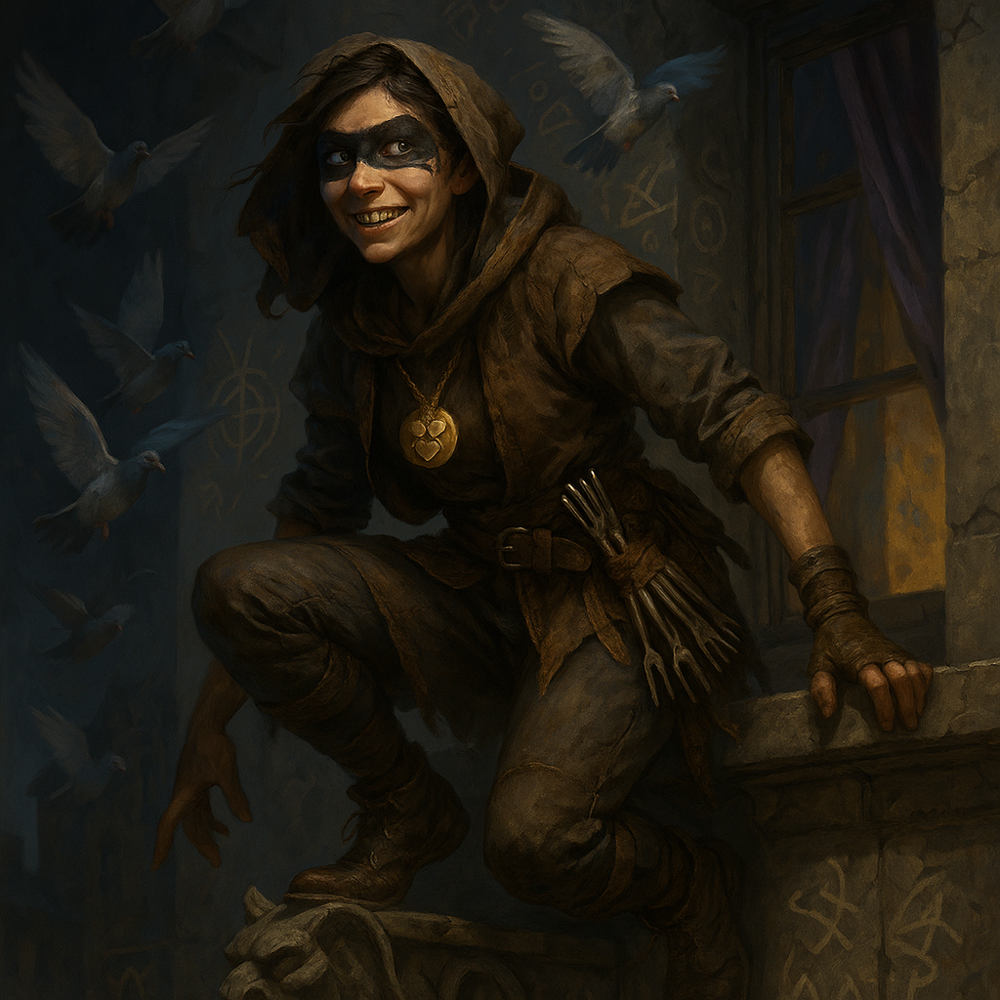

The Mud Nuns¶
“May your pot never empty, and your purse never swell.”
Overview¶
The Mud Nuns — formally The Sisters of the Undulating Graces — are an illegal barefoot order of mendicant women who believe divinity resides in all parts of life, including sweat, soot, and labor. They hold that purity is a lie of the privileged.
Their activities blur the line between charity, espionage, spirituality, and organized crime. They maintain trade routes for smuggled identities and safe passage for the persecuted, bribe officials to look away, and rob nobles whose feasts could feed a district.
Wherever there is a gutter, the Mud Nuns are nearby. Their soup lines double as safehouses, their chants are both teaching scripture and secret codes passing information through the streets. They form a decentralized network of mercy and mischief that recognizes no boundary: saints, smugglers, pilferers, and stray dogs are sacred and profane in equal measure.
The Three Pillars¶
The order began with three women (Nymwe, Esthara and Gerthel) who refused temple service to the old and influential Seekers of Penitence in the City (insert your chosen city’s name here). They were accused of witchcraft, heresy, and blasphemy for daring to claim that holiness could be shared horizontally and not just distributed from above. "A hag coven," declared the High Synod of the Penitentians.
In defiance, the three broke into the Great Temple and emptied its cupboard of relics, selling them to foreign merchants for an immense sum. With the gold, they built kitchens for the poor, shelters for the hunted, and a network of secret safehouses throughout the city. This set the precedent for the entire order of sisters to come.
The Seekers of Penitence swiftly signed contracts for their lives. For years, the three stayed hidden while building their network. Nymwe was finally captured, and later yet Esthara, both whisked away to summarily trials and public executions. Only the third and youngest founder, Gerthel, lived to see the dream of a new Order of Faith come to fruition.
To this day, the Mud Nuns honor the three wise women, calling them the Three Pillars of Faith, and live by their creed: To bow, to give, and to dare (humility, charity and courage).
Doctrine and Belief¶
The Mud Nuns follow three intertwined doctrines collectively known as The Undulation of the Graces.
Doctrine of the Undulation¶
"Divinity comes and goes as it will. We open our hearts to receive when it waxes, and strengthen our souls to endure when it wanes."
Few congregations live as rough as the Mud Nuns. Their theology is survival, only a notch more civilized than the city’s cutthroat alleys. In times of plenty, they share the graces, letting divinity flow like a tide of blessings through the lower wards. When times are harsh, they grow... pragmatic.
Doctrine of Illusion¶
"What fattens the ego, starves the soul."
Wealth, nobility, and law are illusions, temporary states mistaken for the deeper truth of the world’s order. A Sister seeks to see through these glamours to glimpse the sacred beneath the grime. They reject all separation between sacred and worldly work. A Sister may bandage a wound, bribe a guard to look the other way as she smuggles out a runaway slave, or slit a tyrant’s purse. Morality or legality are illusions. The only thing that counts is to facilitate the Undulation of Grace.
Doctrine of Redistribution¶
"Wealth is stagnation. Stagnation rots. Rot spreads."
Hoarded wealth, unshared knowledge, or idle strength are seen as forms of spiritual rot. The Undulation demands that coin, power, care and wisdom circulate. To steal from the rich, connect the lonely to the community, or teach the poor to read is not just about morals, it is about unclogging the City's spiritual arteries.
Organization¶
The Mud Nuns have no temple and no central hall. To gather openly would be suicide since they are all wanted criminals. Instead, they maintain an invisible and highly independent cell network of safehouses known as Pots, scattered through the slums, dockyards, and undermarkets of the City.
| Pot Type | Purpose | Typical Locations |
|---|---|---|
| Iron Pots | Stashes for gear, supplies, and weapons. | Alleys, abandoned stores. |
| Tin Pots | Places of learning; turmeric-robed Sisters teach doctrine, literacy, and numeracy. | Hidden schools in poor districts. |
| Bronze Pots | Shelters for deserters, escaped slaves, abused spouses, orphaned children. | Basements, forgotten shrines. |
| Copper Pots | Transit points for escape routes, often tied to thieves’ or smugglers’ guilds. | Docks, tunnels, rural outposts. |
All Pots are funded through "liberative" operations and black-market sales of liberated goods. Several local treasuries exist, but not even the Inner Council knows them all. When coffers swell, they invest or redistribute to keep the blessings flowing and their Order lean.
At age forty, a Sister retires from larceny and dons the turmeric robes, becoming a teacher, mediator, and spokesperson, dealing with crime lords as well as street urchins. Those few who reach sixty have the choice to lay aside the turmeric robes for white robes, joining the Inner Council, which handles disputes, faith, and the long-term strategy of the sisterhood.
The Inner Council¶
"The Seekers are pressuring Magistrate Hollis. Do we have leverage to keep her from signing arrest warrants? What about blackmail?"
"Three sisters want to liberate the Duke's treasury during the harvest feast. Can we afford the heat if they succeed? Can we afford to tell them no and watch them go rogue?"
These old ladies carry the cost of years of resistance written on their bodies. Scars and limps, one eye missing, hands shaking, an elderly lady compulsively chews some substance, an old habit she caught back when she was 30 and never stopped since it helps her sleep. They look absolutely vicious and mean, even though they're probably the least violent people you ever met (not necessarily nice or peaceful, but they've lived in service of the Order their entire lives, saved and bettered thousands of lives).
They've been arrested, tortured for information they didn't give, watched friends break under interrogation and had to decide whether to cut them out or risk the whole network. Their meetings are more like war councils and less like a pious gathering of cardinals. This council is the people who carry the moral weight of all the names they remember, and are willing to carry even more. You don't get white robes at sixty just for showing up.
When they tell younger sisters "no Fork Raids," it is because they know exactly how fast mischief becomes massacre. They're remembering the crackdown of '98 when a Fork Raid went wrong, guards stormed three Pots, seventeen sisters were arrested and eight never came back. The young nuns think the elders don't understand and are just being controlling killjoys. The elders understand all too well.
The Inner Council is built from a horizontal cell structure: Every member organizes her own branch and weighs in with her experience in the communal discussion, but nobody knows everything. This protects the order as a whole even if one member of the Inner Council is compromised.
Sister Demorah, the Ledger-Hand¶
A late middle-aged Tiefling, Demorah is pragmatic and deeply committed to the cause. She's the Sisterhood’s strategist and chief logistics officer. It’s said she never enters a room without ten exits mapped. If the Inner Council is the heart, Demorah is the pulse. Demorah organizes the meetings of the Inner council, setting rotating dates and places for the meetings, and making sure to know just enough to do her job well, and too little to be irreplaceable.
Operations and Methods¶
“Bargain with anybody, but choose who you dine with.”
The Mud Nuns bargain with almost anyone — thieves, nobles, guards, smugglers, prostitutes and pirates. All are part of the Undulation. But they shun groups who kill for a living, such as assassin guilds and destructive cults. Stopping the flow of life itself is an affront to the Undulation of the Graces.
Methods, aesthetics and to some extent philosophies can vary between Pots (sometimes spawning friendly rivalry for the Inner Council to deal with), but their goal remains: restore movement and grace to what the powerful have stagnated.
The Order enjoys immense popularity among the poor and oppressed. Their support is so immense in the slums that sisters can walk openly in their distinctive turmeric robes without fear of being taken off the street by the law, lest there be riots. Not even the Inner Council knows the full extent of the contacts and affiliates, and that is by design.
Symbols and Rituals¶
“Congratulations! Your assets have been successfully redistributed! Kindly receive this as receipt of your successful spiritual plumbing and contribution to the flow of the graces. Best wishes, Sister Ivanova.”
- Receipts: Whenever a Sister steals, she leaves a receipt as proof that this was an act of faith, not of greed.
- Street Wildlife: City animals, whether they be stray dogs, cats, pigeons, raccoons, rats, monkeys, lizards, are all just as much a part of the Undulation as the people. Some Nuns become Urban Druids or rangers, caring for them and training them as helpers or scouts. Some even mark their faces with raccoon stripes of soot to signal their connection with the naked life of the City.
- The Humbler: Clerics of the Undulating Graces have summoned this Spiritual Weapon Giant Soup Ladle for generations to keep order in the soup kitchen lines and correct bullies who try to cut in line or take more than their share of the lentil soup. Now it has become less of a weapon, and more of a calling sign for the hungry: Wherever they can see this spectral weapon floating, food and safety is close by.
Remembering the honored dead¶
Keeping the dead and lost in living memory is not stagnation, but honoring and connecting hearts spanning the chasm of time. Sister Mirela walked Clamfeeder Street barefoot for eleven years. Her feet knew every uneven board, every drainage grate, every spot where the winter ice pooled into late spring. When sisters walk that route barefoot today, they're literally walking in her footsteps. The knowledge doesn't just flow person to person through stories, but from ground, to foot, to memory, to teaching, to next foot.
The sisters don't build shrines for their departed, and they don't expect shrines for themselves. They lovingly retell their stories to the acolytes, or keep up their habits: A soup line still follows the way Sister Elva stacked the bowls. A Copper Pot still uses the knock Sister Miren invented. A forged stamp is still cut the way Old Kat carved it before she vanished. They may be gone, but the world now moves differently, because they existed.
The Fork Raids¶

"If the rich can’t stoop to eating with their hands, they shouldn’t eat at all." — Anonymous graffiti, Upper Ward
Among the younger Sisters of the Mud Nuns, a forbidden game circulates, called The Fork Raids. It has become an entrenched tradition, despite the best efforts of the older nuns to stamp it out. Once each season, the most daring novices conspire to steal every silver, gold, or jeweled fork from the noble districts. To the young Nuns, it’s sacred comedy, and the goal is to humble the wealthy, to force the city’s lords eat with wooden forks, or with their fingers, like everyone else.
Within a week of targeted, intense fork raids, panic ensues — city gossip fills with tales of forks locked in safes, servants being searched at the gates, nobles dining with sharpened sticks or paying mercenaries to guard their cutlery. Locksmiths report record profits; temple feasts are postponed for lack of proper utensils.
Some younger Sisters begin keeping private fork collections, showing them off in secret gatherings like trophies. But fork theft done for vanity, pride, or the thrill of one-upmanship is not sanctified by doctrine. Elder Sisters publicly denounce the raids, and speak softly about the fact they participated themselves when they were younger.
If discovered, any young Nun who participated in the Fork raid is expected to return every fork, one by one, with an apology, as penance. The journey can take weeks, and it’s said the shame of knocking on gilded doors with stolen forks in hand teaches more theology than a year of sermons.
To the older sisters, the Fork raids aren't just a charming quirk of raising a generation of theologically convinced daredevils. It's an issue of pushing the river. Enlightenment can't be shoved down someone's throat if they're not ready. Stealing should be for the good of the person getting robbed as well as the people receiving relief. Enforcing humility is sloppy theology and a sign of spiritual pride. That's why the young ones are expected to apologize if found out.
The Seekers of Penitence¶
The Mud Nuns' heretical origin ensures persecution by nearly every established faith. Their oldest enemies are the Seekers of Penitence, an order of ascetics preaching purification through transformation of the ego. They are thematically opposite of the Mud Nuns, but also the order from which the Three Pillars originally came.
The Seekers believe the Mud Nuns are heirs of a Hag Coven who corrupted doctrine, stole relics for dark rituals, and spread chaos to weaken the city’s spiritual defenses.
The Accords of Ascension¶
Foundational creeds of the Seekers:
- Regrets are insights in gestation.
- The mind is the furnace of the soul.
- Only once your ego is hollow can it serve as a link in the Chain to Heaven.
- If you fail, the whole chain will break.
- Guard well your brothers and sisters, for all our sakes.
“Seek your heart for regrets, light a fire in your mind, and throw your fears to it like kindling. In the heat of transformation, forge the oath of ascension and add your link to the chain that reaches the heavens.”
— Grand Master Syphone
Symbol: Symbolizing both the binding nature of their creeds, and the way every Brother and Sister of their order is dependent on everybody else. Members of the order wear chains in a criss-cross pattern across their torso, above their monk robes, and add more chains as they grow in age and status in the order.
Leader: Grand Master Syphone, an ancient, gnarled Elven monk who still remembers the three Pillars and their apostasy. He is laden with chains, criss-crossing his arms, legs and body.
To the Seekers, the Mud Nuns are not just heretics against order and solidarity, they're the most blatant evidence of what happens when the chain breaks, and their continued existence is an affront to their whole theology.
“I don’t care that they feed the poor! They’re utterly weird, and it’s rubbing off on the populace! The last girl we caught wore full raccoon make-up and stabbed Brother Ivar with a bejeweled fork!”
— Serenya, Master of Discipline
Temporal Power¶
- The Ascension Monastery: Fortified temple in the Upper Ward.
- Chapter Houses across the City.
- Faith Courts: Legal authority to prosecute “religious crimes.” Most accused Mud Nuns vanish.
- The Chain Guard: 60 warrior-monks with arrest powers granted by the City's rulers.
Economic Power¶
- Tithes from wealthy patrons.
- Workshops producing textiles, metalwork, illuminated texts.
- Training contracts with city guards.
Political Power¶
- Seats on the City Council.
- Grand Master Syphone advises the Ruler on “spiritual matters.”
- Many judges and magistrates are former Seekers.
Mechanics and PC Material¶
No regular D&D deity is provided for the Sisters of the Undulating Graces. This keeps the concept portable to any campaign setting.
Example Character¶
Sister Garra: a Tabaxi Trickster Cleric with the Mud Nun background, struggling with her love for small luxuries and her fear of soon having to take the turmeric robes.
Mud Nun Background¶
A homebrew variant of the Scribe background (2024 rules):
- Ability Scores: Dexterity, Charisma, Wisdom
- Feat: Skilled
- Skill Proficiencies: Religion, Stealth
- Tool Proficiency: Cook’s Utensils, Thieves' Tools or Forgery Kit
- Equipment: Holy symbol, 2 pouches, traveler’s clothes, bedroll, dagger, chosen toolkit, 16 gp
Mud Nun-Flavored Classes¶
Ranger — Beastmaster of the Alleys¶
- Flavor: Mud Nun in a small, half-feral, self-governing Pot, using trained animals for heists or espionage. They roam the streets and rooftops to learn of the comings and goings of city life, proactively identifying threats to the Sisters, or opportunities to seize, and dealing with them as necessary.
- Tracks kidnappers, slavers, and corrupt priests.
Urban Druid — Circle of the Undulation of the Graces¶
"Even the humblest life deserves recognition." - Flavor: A Mud Nun who has turned away from the social aspects of the Order and focuses on healing nature, setting up resilient permaculture urban gardens for times of food scarcity, protecting animals from cruelty in the markets and streets, making commons flourish and the parks safe, channeling the Undulation of the Graces to create beauty even in the slums and gutters.
Hooks and Play Opportunities¶
Plot hooks for DM's
- Use the order as a network of safehouses or black-market healers and fences when on the run.
- Lately, a slew of crackdowns have decimated the Mud Nun operations in the Docks districts and they've been all but driven off. The Seekers of Penitence seem to have insider knowledge of many of their safehouses. Older Sisters avoid donning their turmeric robes for fear or recognition. Meanwhile the senior Sister Nadya has gone missing... Did she defect or have the Seekers found a way to make her speak?
- Have the Mud Nuns appear as unlikely allies in an urban heist or revolution arc.
- When the PCs anger the wrong people, the Order may offer a way out.
- The PCs may be hired by a noble house to retrieve a legitimately cherished heirloom, a memento of a lost parent perhaps, that was stolen by a Mud Nun.
Cultural Context and Inspirations¶
Most D&D faiths draw from Western theology, but the Mud Nuns draw inspiration from Hindu practices, South American and Palestinian Liberation Theology, Tolstoyan Christian Anarchism and finally Daoist metaphysics, aiming to honor but not appropriate underrepresented spiritual systems. But they are entirely fictional and not meant to closely represent any real-world faith or practice.
Key Concepts:¶
- Satyagraha (Force of Truth): Civil disobedience as active redistribution.
- Bhakti (Way of the Heart): Devotion over religious and social hierarchy, or ritual purity.
- Maya (Illusion): Clinging to wealth is to be trapped in illusion by your attachments.
- Seva (Selfless Service): Theft and redistribution is sacred duty in service of both the rich who are liberated and the poor who receive relief.
Players and DMs are encouraged to research these traditions with respect.